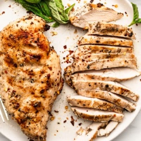

← All recipes
Italian Marinated Grilled Chicken

Servings: Servings: 6 · Prep: 1 hr · Cook: 20 mins
Ingredients
- Chicken
- 6 chicken breasts, trimmed
- Easy Homemade Italian Dressing
- ¾ cup olive oil, extra virgin
- ¼ cup red or white wine vinegar
- 1 teaspoon lemon juice
- 1 teaspoon garlic powder
- 1 teaspoon dried oregano
- 1 teaspoon dried basil
- ½ teaspoon onion powder
- ½ teaspoon crushed red pepper
- ¾ teaspoon salt
- ½ teaspoon black pepper
Directions
- Place your chicken breasts in a gallon Ziploc bag with all ingredients for the Easy Homemade Italian Dressing. Seal the bag, squeezing out any excess air. Let the chicken marinate for at least one hour and up to 12 hours.
- Grill or saute your chicken depending on your preference. I’m providing instructions for both below.
- On the Grill
- Remove each chicken breast from the bag and place on a hot grill over medium heat. Grill 5 to 7 minutes on each side or until done. (Juices should run clear.)
- On the Stove
- Add 2 tablespoons of olive oil or another cooking fat to a skillet on the stove. Heat the oil over medium high heat. (You’ll know it’s ready when the chicken sizzles as you place it in the pan.) Add each chicken breast to the skillet in a single layer. Cook for about 5 minutes. Flip your chicken. Cook for an additional 5 minutes. (Chicken should be firm to the touch when done and juices should run clear.)
Notes
This makes enough marinade for up to 8 chicken breasts so feel free to toss two more in the marinade if you’re feeding a crowd or just meal prepping!
Original source: thewholecook.com